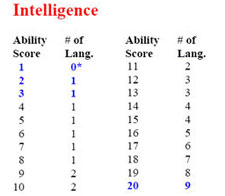

CREAZIONE DEI PERSONAGGI ARELIANI
Ogni giocatore può decidere, dopo aver tirato un personaggio, di annullarlo definitivamente e procedere alla creazione di un nuovo personaggio. In tal caso però perderà il 10% dei punti partenza accumulati. Potrà ripetere questa operazione anche più volte e il 10% si detrarrà sempre dal nuovo punteggio residuo. In ogni caso, quando un giocatore raggiunge un punteggio di punti partenza residui inferiore a 1250 punti, non può più ridurli per ridurli per ritirare il personaggio.
Dopo
aver giocato cinque o più sedute, un giocatore può decidere di far ritirare il
proprio personaggio trasformandolo in un personaggio non giocante e creare un
nuovo personaggio senza alcuna penalità ed usufruendo del sistema degli
incentivi in fase di creazione.
Qualora un personaggio muoia prima di essere stato giocato per cinque sedute, il
giocatore che creerà il nuovo personaggio senza poter usufruire del sistema
degli incentivi in fase di creazione ed il personaggio creato non farà scalare
alcuna tabella del suddetto sistema.
Alla fine della quinta seduta nella quale un giocatore gioca il medesimo personaggio facendolo sopravvivere costui riceverà un + per la longevità. Successivamente, tale beneficio sarà concesso al termine di ogni tre sedute.
CAMPAGNA IN CORSO
Per creare un personaggio ad Arelia occorre seguire i seguenti punti nel loro preciso ordine:
1) PUNTI CREAZIONE
Il giocatore avrà a disposizione 6d6 di punti creazione che potrà gestire in tutta la procedura di creazione del proprio personaggio.
Dopo aver tirato il giocatore potrà decidere di perdere il 5% dei punti partenza per ottenere ulteriori 1d6+3 punti creazione.
2) ACCESSO ALLE VARIE RAZZE
Nella compagna "Le Colline Libere di Fetch" ogni giocatore può scegliere una razza tra le seguenti tirando 1d20. Ovviamente potranno sempre essere scelte razze corrispondenti a punteggi inferiori a quello tirato. Un giocatore, inoltre, può aumentare il tiro effettuato di un punto per ogni punto creazione utilizzato fino ad un ammontare massimo di cinque incrementi.
RISULTATO DA 1 A 7
RISULTATO DA 8 A 10
RISULTATO DA 11 A 12
RISULTATO DA 13 A 14
RISULTATO 15
RISULTATO DA 16 A 18
RISULTATO DA 19 A 20

Si noti che sebbene l'accesso alla razza si tiri per prima, la scelta effettiva della razza del personaggio andrà effettuata dopo il tiro delle abilità (alcune razza infatti richiedono punteggi minimi in alcune abilità che il giocatore dovrà rispettare per poter usare tale razza).
3) ABILITA' PRIMARIE
Il giocatore, quindi, sceglie l'ordine di priorità da dare alle sue abilità. Poi tira per ogni abilità 1d100 per verificare il punteggio base ottenuto secondo la seguente tabella:
PRIMA ABILITÀ (1d100)
| 1-10 | 11-20 | 21-30 | 31-40 | 41-50 | 51-60 | 61-70 | 71-80 | 81-90 | 91-100 |
| 9 | 10 | 11 | 12 | 13 | 14 | 15 | 16 | 17 | 18 |
SECONDA ABILITÀ (1d100)
| 1-10 | 11-20 | 21-30 | 31-40 | 41-50 | 51-60 | 61-70 | 71-80 | 81-90 | 91-98 | 99-100 |
| 8 | 9 | 10 | 11 | 12 | 13 | 14 | 15 | 16 | 17 | 18 |
TERZA ABILITÀ (1d100)
| 1-10 | 11-20 | 21-30 | 31-40 | 41-50 | 51-60 | 61-70 | 71-80 | 81-90 | 91-97 | 98-99 | 100 |
| 7 | 8 | 9 | 10 | 11 | 12 | 13 | 14 | 15 | 16 | 17 | 18 |
QUARTA ABILITÀ (1d100)
| 1-10 | 11-20 | 21-30 | 31-40 | 41-50 | 51-60 | 61-70 | 71-80 | 81-90 | 91-97 | 98-99 | 100 |
| 6 | 7 | 8 | 9 | 10 | 11 | 12 | 13 | 14 | 15 | 16 | 17 |
QUINTA ABILITÀ (1d100)
| 1-10 | 11-20 | 21-30 | 31-40 | 41-50 | 51-60 | 61-70 | 71-80 | 81-90 | 91-97 | 98-99 | 100 |
| 5 | 6 | 7 | 8 | 9 | 10 | 11 | 12 | 13 | 14 | 15 | 16 |
SESTA ABILITÀ (1d100)
| 1-10 | 11-20 | 21-30 | 31-40 | 41-50 | 51-60 | 61-70 | 71-80 | 81-90 | 91-97 | 98-99 | 100 |
| 4 | 5 | 6 | 7 | 8 | 9 | 10 | 11 | 12 | 13 | 14 | 15 |
Dopo aver tirato le
abilità il giocatore potrà :
1) Spostare il punteggio di una sua abilità con quello tirato su un'altra
abilità al costo di 3 punti creazione. Il
personaggio potrà effettuare un unico cambio.
2) Aumentare il punteggio delle varie abilità utilizzando i punti creazione. In ogni
caso il giocatore potrà effettuare al massimo un totale di sei miglioramenti
fra tutte le abilità precedentemente tirate. Unica
eccezione è rappresentata dal caso in cui un giocatore, volendo giocare una
determinata classe, non riesce utilizzando sia lo spostamento del risultato che
i sei miglioramenti, a raggiungere i requisiti minimi di abilità previsti per
quella classe. In tale caso costui potrà, dopo aver effettuato tali operazioni,
procedere ad un ammontare di aumenti supplementari che gli consenta di
raggiungere unicamente questi requisiti (sempre che costui non abbia in
precedenza proceduto ad aumentare oltre i requisiti richiesti le sue abilità).
Ogni punto di abilità
supplementare ha un costo incrementale in punti creazione che dipende dal
punteggio al quale si vuole arrivare come specificato nella seguente tabella:
| fino a 9 | da 10 a 12 | da 13 a 14 | 15 | 16 | 17 | 18 ed oltre |
| 1 punto | 2 punti | 3 punti | 4 punti | 5 punti | 6 punti | 7 punti |
Il punteggio di forza straordinaria dei guerrieri sarà tirato con un tiro secco da 1d100 senza alcuna possibilità di modificazione.
Esempio: Un giocatore che abbia tirato un 13 in una delle sue abilità e voglia farla salire al punteggio di 16 spenderà un totale di 15 punti creazione (4 punti creazione per arrivare a 14 + 5 punti creazione per arrivare a 15 + 6 punti creazione per arrivare a 16).
4) CAPACITA' di OSSERVARE
Una volta determinato il punteggio delle abilità del personaggio potrà calcolarsi il valore della propria capacità di osservare. Il valore di osservare è dato dalla media (calcolata per difetto) del punteggio di Intelligenza e Saggezza del personaggio. La capacità di osservare non è un'abilità esclusivamente attiva, ciò vuol dire che solo qualora il giocatore indichi con adeguata precisione al DM di osservare un determinato particolare (ad es. la superficie dell'acqua di uno stagno, le foglie di un albero, una determinata serratura o sezione di parete in una stanza) il DM (qualora ritenga ci possa essere qualcosa da osservare) permetterà al personaggio di superare una prova in questa capacità al fine di determinare se lo stesso si sia accorto di un particolare od un dettaglio altrimenti non evidente. Alla prova può essere applicato un modificatore da + 4 a - 4 a seconda della complessità dell'azione.
5) APPEARANCE
Per determinare la
piacevolezza dell'aspetto fisico di un personaggio si sommino i tre seguenti
valori:
A) Si sommino i valori delle abilità fisiche Forza,
Costituzione, Destrezza e si divida il risultato per 9 effettuando un
arrotondamento al numero intero più prossimo.
B) Si divida il valore del carisma per 3
effettuando un arrotondamento al numero intero più prossimo.
C) Si tiri 1d6
La somma dei valori di A, B e C darà luogo al punteggio di appearance del
personaggio. Si noti che il punteggio rappresenta la piacevolezza dell'aspetto
fisico del personaggio relativo alla propria razza di appartenenza non potendosi
considerare un valore di per sé assoluto.
6) SELEZIONE DELLA RAZZA
Una volta determinato il punteggio delle abilità il personaggio dovrà scegliere la razza del proprio personaggio fra quelle a sua disposizione in base al tiro effettuato relativo all'accesso alle varie razze. Una volta scelta la razza il personaggio dovrà decidere se utilizzare i propri punti creazione per accedere ai poteri ed alle abilità speciali eventualmente previsti dalla razza prescelta.

7) ACQUISTO DEI TALENTI RAZZIALI
Una volta scelta la razza il personaggio dovrà decidere se utilizzare i propri punti creazione per accedere ai poteri ed alle abilità speciali eventualmente previsti dalla razza prescelta.
8) SELEZIONE DELLA CLASSE
Il giocatore a questo punto deve determinare la propria classe di personaggio.
9) ACQUISTO DEI TALENTI DI CLASSE
Una volta scelta la classe il personaggio dovrà decidere se utilizzare i propri punti creazione per acquisire talenti propri della macroclasse di appartenenza. I personaggi appartenenti alle classi di Utenti di Magia potranno determinare in questa sede il numero dei loro incantesimi di partenza.

10) ETÀ DI PARTENZA
Una volta determinata razza e classe (e quindi livello di partenza) si potrà determinare l'età del personaggio. Si consideri che l'età di un personaggio di primo livello di esperienza sarà quella prevista dalla starting age della razza. Per i personaggi di livello superiore al primo, invece, saranno aggiunti un determinato numero di anni per ogni livello di esperienza raggiunto come espressi nella seguente tabella (si noti che personaggi appartenenti a razze con penalità ai punti esperienza si consideri, in modo fittizio ed ai soli fini del calcolo dell'età del personaggio, il livello che avrebbero raggiunto in quella classe qualora non avessero avuto quella penalità). Si noti che gli anni da addizionare per ogni livello raggiunto oltre il primo sono cumulativi.
| LIVELLO DI ESPERIENZA RAGGIUNTO | ANNI DA ADDIZIONARE |
| 2° | 1d2 |
| 3° | 1d3 |
| 4° | 1d3 |
| 5° | 1d3+1 |
| 6° | 1d3+1 |
| 7° | 1d3+3 |
| 8° | 1d3+3 |
| 9° | 1d3+4 |
| 10° e superiore | 1d3+5 |
11) TALENTI
I personaggi che scelgono alcune classi possono decidere di spendere 4 punti creazione per attribuire un unico talento sorteggiato a sorte dai talenti di una singola classe di personaggi talentuosi.

12) PUNTI DIVINI (link)
Dopo aver scelto la classe saranno attribuiti al personaggio i punti divini. In particolare l'ammontare totale dei punti divini sarà determinato in questo modo:
Per
i personaggi del primo livello di esperienza si calcolerà:
a) Un punto divino per il
primo
livello di esperienza
b) Un punto divino per bonus di reaction adjustment del Carisma (in caso di
assenza di bonus o di presenza di un malus per il reaction adjustment del
Carisma non sarà ottenuto alcun punto divino).
Per
i personaggi di livelli superiori al primo si calcolerà:
a) L'ammontare dei punti
divini spettanti al primo livello di esperienza come sopra
specificato.
b) I personaggi con un
valore di Carisma pari a 13 o maggiore hanno una % pari al triplo del loro
carisma di ottenere un ulteriore punto divino per livello di esperienza oltre al
primo. I personaggi con un malus al reaction adjustment del Carisma avranno ogni
livello una percentuale pari al 10% + 10% moltiplicato per il valore del malus
posseduto di non ottenere il punto divino al superamento del livello di
esperienza come previsto alla lettera a) del presente capo).
c) I Chierici ed i Paladini ottengono un punto divino supplementare nei seguenti
livelli di esperienza : 3°, 6°, 9°, 12°, 15°, 18° e 20°.
d) Si tirerà, infine, 1d10
- 1. Il risultato
del tiro moltiplicato per 10 rappresenta la percentuale di punti divini che,
essendo stati già utilizzati dal personaggio fino a quel momento della sua vita,
saranno eliminati dall'ammontare dei punti divini totali (si arrotonderà,
però, a favore del mantenimento dei punti divini).
Una volta determinato l'ammontare dei punti divini del personaggio il giocatore
potrà decidere, unicamente laddove sia espressamente
previsto, di utilizzare tali punti nelle seguenti fasi sulla creazione
del personaggio. In ogni caso, si tenga presente che ogni tiro potrà essere
ripetuto sempre e solo un'unica volta.
13) PUNTI FERITA
Il giocatore tirerà i
punti ferita del personaggio, in particolare tirerà due dadi per ogni livello
di esperienza potendo scegliere, fra
questi, il risultato migliore.
Ogni volta che il personaggio lancia i due dadi di un
singolo livello costui potrà decidere di utilizzare un punto divino al
fine di ritirare uno solo di questi dadi. Un solo punto divini potrà essere
utilizzato per ogni livello di esperienza.
Inoltre,
il personaggio può decidere di aumentare il risultato ottenuto con il dado
spendendo un punto creazione per ogni punto ferita supplementare che desidera
ottenere, senza poter ovviamente
superare il punteggio massimo previsto dal dado.
14) CONOSCENZA
BASICA DELLA MAGIA
Il giocatore effettuerà i
tiri per determinare la conoscenza di magie inferiori conosciute come cantrip.
Si noti che gli appartenenti alla razza Nani del Massiccio non possono conoscere
questo tipo di magie.
15) ORIGINI SOCIALI
Il personaggio dovrà determinare la situazione sociale di partenza del proprio personaggio. A seconda del risultato ottenuto potranno essere influenzati, come specificato, i successivi tiri patrimoniali del personaggio.
Il giocatore può utilizzare un punto divino per ripetere, eventualmente, il tiro effettuato. In nessun caso, però, sarà possibile ripetere il tiro ottenuto nella sottotabella delle Origini Nobiliari.
Inoltre, il personaggio può decidere di elevare il suo status sociale di partenza di una singola classe sociale spendendo 2 punti creazione. Se in questo modo si accede alle origini nobiliari sarà acquisito automaticamente il rango corrispondente al Cavalierato (Sir). In nessun caso sarà possibile elevare lo status nobiliare quale risultante dal tiro nella sottotabella delle Origini Nobiliari.
01-05
: Origini Infime (Dalla schiavitù, illecite, senza famiglia,vagabondi)
–15
% tiri patrimoniali /
06-15
: Origini Umili (Poveri contadini, piccoli artigiani,braccianti)
–5
% tiri patrimoniali /
16-35
: Origini Modeste (Contadini,Guardie, Soldati semplici)
36-65
: Origini Comuni (Piccoli ufficiali, Commercianti, Piccoli Imprenditori)
66-85
: Origini Borghesi (Buoni commercianti, Imprenditori, ecc…)
86-95
: Origini Altolocate (Alti funzionari, Ufficiali militari, Notabili)
+3
% tiri patrimoniali
01-50 : Cavalierato (Sir):
+5 % tiri patrimoniali
+6%
possibilità di promozioni ad incarichi istituzionali
51-80 : Piccolo Vassallo (Lord):
+10 % tiri patrimoniali
+7%
possibilità di promozioni ad incarichi istituzionali
81-94 :Vassallo (Barone, Conte) :
+15 % tiri patrimoniali
+8%
possibilità di promozioni ad incarichi istituzionali
95-99 :Grande Vassallo (Duca) :
+20 % tiri patrimoniali, *2 tutti i risultati
+9%
possibilità di promozioni ad incarichi istituzionali
00 : Famiglia Sovrana (Re) :
+30 % tiri patrimoniali, *5 tutti i
risultati
+10%
possibilità di promozioni ad incarichi istituzionali
16) TIRI PATRIMONIALI
A) DENARO DI PARTENZA
Il giocatore può utilizzare un punto divino per ripetere il tiro effettuato.
01-05
: 10 g.p. * livello di esperienza
06-15
: 80 g.p. * livello di esperienza
16-35
: 130 g.p. * livello di esperienza
36-65
: 200 g.p. * livello di esperienza
66-85
: 400 g.p. * livello di esperienza
86-95
: 600 g.p. * livello di esperienza
A
questa cifra i personaggi del 7° livello di esperienza e superiori
aggiungeranno
7°
: 500 g.p.
8°
: 1000 g.p.
9°
: 2000 g.p.
10°
: 4000 g.p.
11°
: 7000 g.p.
I personaggi possono utilizzare punti creazione per aumentare il loro patrimonio
iniziale in base al loro livello di esperienza secondo questo schema:
Personaggi di livello 1° - 2° 50 monete d'oro per
punto creazione
Personaggi di livello 3° - 4° 125 monete
d'oro per punto creazione
Personaggi di livello 5° - 6° 300 monete
d'oro per punto creazione
Personaggi di livello 7° - 8° 500 monete
d'oro per punto creazione
Il giocatore può utilizzare un punto divino per ripetere il primo tiro effettuato. Non può essere ripetuto, invece, il tiro per determinare l'ammontare l'esatto ammontare delle rendita (espresso tra parentesi).
Livello
1° - 3° di esperienza
01-50
: Nessuna rendita di partenza
51-89
: Rendita mensile per un valore pari a (1d6) * 10 g.p.
90-00
: Rendita mensile per un valore pari a (1d6) * 25 g.p.
Livello
4° - 6° di esperienza
01-50
: Nessuna rendita di partenza
51-75
: Rendita mensile per un valore pari a (1d6+1) * 15 g.p.
76-90
: Rendita mensile per un valore pari a (1d6) * 50 g.p.
91-00
: Rendita mensile per un valore pari a (1d6+2) * 60 g.p.
Livello
7° e superiore
01-50
: Nessuna rendita di partenza
51-70
: Rendita mensile per un valore pari a (1d8+1) * 15 g.p.
71-87
: Rendita mensile per un valore pari a (1d8+1) * 55 g.p.
Il giocatore che ha ottenuto una rendita può, unicamente in questa sede, decidere di estinguerla definitivamente ottenendo in un'unica soluzione un ammontare di monete d'oro pari a 24 mensilità di rendita che potrà utilizzare in fase di creazione del personaggio.
C) OGGETTI MAGICI DI PARTENZA
Il giocatore può utilizzare un punto divino per ripetere ogni tiro effettuato.
Per ogni risultato tirato con successo il personaggio potrà disporre della relativa somma in monete d'oro per acquistare oggetti magici di partenza posseduti. Il personaggio può accumulare le somme ricevute ed eventualmente aggiungerci monete d'oro per acquistare oggetti magici più potenti e costosi. Se il personaggio acquista oggetti magici le relative tasse di possesso (una tantum) si considereranno già pagate. Si noti che laddove previsto il personaggio è tenuto a pagare l'oggetto sul quale inserire l'incantamento desiderato, a tal proposito costui non dovrà pagare le prime 250 g.p. di valore dell'oggetto che desidera farsi incantare, per oggetti più costosi dovrà pagare la differenza. Si noti che tutte le armi incantate dovranno essere almeno superbe. Se, ad esempio, un personaggio avendo tirato un oggetto da 5000 g.p. vuole acquistare un incantamento +1 su una corazza di piastre dal valore di 600 g.p. dovrà pagare 350 g.p. (600 g.p. - 250 g.p.). Il costo dell'oggetto da incantare può essere detratto, anche parzialmente, dalla somma in monete d'oro di cui il personaggio dispone per gli oggetti magici. Se, invece, il personaggio desidera non acquisire oggetti magici ma venderli, anche in parte, per ottenere monete da spendere in altro modo riceverà l'80% del valore venduto sulla quale cifra poi pagare le tasse come previste dallo Stato di partenza.
1st
7% /
1 /
500 g.p.
2nd
17% /
2 /
500 g.p.
3rd
27% /
2 /
500 g.p.
17% /
1 / 1500 g.p.
7% /
1 /
5000 g.p.
4th
37% /
2 /
500 g.p.
22% /
1 /
1500 g.p.
12% /
1 /
5000 g.p.
5th
47% /
2 /
500 g.p.
27% / 2 / 1500 g.p.
17%
/ 1
/ 5000 g.p.
6th
57% /
3 /
500 g.p.
32% /
2 /
1500 g.p.
22% /
1 /
5000 g.p.
7th 67% /
3 /
500 g.p.
37% /
2 /
1500 g.p.
7% / 1 / 10000 g.p.
8th
72% /
3 /
500 g.p.
42% /
2 /
1500 g.p.
12% /
1 /
10000 g.p.
9th 77% /
4 /
500 g.p.
47% /
3 /
1500 g.p.
17% / 1 / 10000 g.p.
10th 77% /
5 /
500 g.p.
47% /
4 /
1500 g.p.
17% / 1 / 10000 g.p.
11th +
77% /
5 /
500 g.p.
53% /
4 /
1500 g.p.
23% / 1 / 10000 g.p.
17) CARATTERISTICHE SPECIALI
Il giocatore non può utilizzare punti divini per ripetere i tiri effettuati in questa sezione.
Il personaggio ora tira 1d20 per determinare il numero delle sue caratteristiche speciali secondo questa tabella:
| 17-20 | 3 caratteristiche particolare |
| 12-16 | 2 caratteristiche particolare |
| 6-11 | 1 caratteristica particolare |
| 1-5 | Nessuna caratteristica |
Per ogni caratteristica tirata il personaggio deve poi determinare se si tratta di una caratteristica positiva o negativa tirando sulla seguente tabella:
| 51-100 | Caratteristica Negativa |
| 1-50 | Caratteristica Positiva |
A questo punto il giocatore può decidere, prima di determinare che tipo di caratteristica si tratti, di utilizzare per ogni caratteristica negativa da eliminare 3 punti creazione.
Inoltre, il giocatore potrà decidere di utilizzare 3 punti creazione per acquistare e tirare un'unica caratteristica positiva supplementare.
TIPOLOGIA
DI CARATTERISTICA (Tirare un dado da 10)
1-2
Abilità fisica / Difetto
fisico
3-4
Capacità mentale / Difetto
Psichico
5-6
Opportunità sociali / Problemi sociali
7-8
Approfondimento culturale / Lacuna
culturale
9-10 Vantaggio generico / Svantaggio generico
|
1-10 |
Tratti somatici particolari |
|
11-25 |
Altezza superiore
alla media |
|
26-48 |
Rapidità dei
riflessi |
|
49-70 |
Vista Superiore |
|
71-85 |
Resistenza all’affaticamento |
|
86-95 |
Rapidità di movimento |
|
96-100 |
Fisico Superiore |
Tratti
somatici particolari : Il personaggio è dotato di un fascino particolare
in quanto contraddistinto da una particolarità positiva dei tratti somatici
della sua razza (colore degli occhi o dei capelli, morbidezza della pelle,
muscoli ben definiti). Ottiene un punto supplementare di carisma anche oltre i
massimi razziali ed un bonus di +2 alle prove di appearance.
Altezza superiore alla media : Il personaggio è particolarmente alto per essere un membro della sua razza di appartenenza, verrà applicato un modificatore di + 30% (per difetto) all’altezza da lui tirata e + 20 % (per difetto) al peso. Inoltre otterrà 2 punti ferita supplementari alla creazione del personaggio e +1 alle prove di appearance ed il - 5% ad ogni fit in per le corazze.
1-2 Forza (se
straordinaria + 10%) 3-4
Destrezza 5-6
Costituzione
Difetti Fisici
|
1-8 |
|
|
9-20 |
|
|
21-42 |
|
|
43-60 |
|
|
61-75 |
Debolezza muscolare |
|
76-85 |
Debolezza
sensoriale |
|
86-95 |
Malattia
genetica |
|
96-100 |
Mutilazione
corporea o inabilità parziale permanente |
Obesità genetica:
Il personaggio è particolarmente grasso per essere un membro della sua razza di
appartenenza, verrà applicato un modificatore di +50% (per difetto) al suo
peso corporeo, questo comporterà una perdita di 2 punti fatica permanenti, -2
alle prove di appearance e -1 a tutte le prove di destrezza.
Capacità
Mentali
|
1-10 |
Capacità
riflessive
|
|
11-25 |
Sesto senso
|
|
26-48 |
Acume mentale
|
|
49-70 |
Resistenza Mentale |
|
71-85 |
Facilità di
apprendimento
|
|
86-95 |
Mente geniale
|
|
96-100 |
Poteri Psionici
Naturali
|
Sesto
senso : Il personaggio ha sviluppato un senso innato per le situazioni
pericolose. Riceve un bonus di +2 a tutti i suoi tiri sulla sorpresa.
Acume
mentale : Il personaggio è mentalmente dotato, riceve a sua scelta o 3
punti magia generici del primo livello di potere oppure 3 punti combattimento
supplementari.
Resistenza
mentale : La mente del personaggio è particolarmente resistente agli
effetti magici, il personaggio riceve un bonus di +2 a tutti i tiri salvezza
contro incantesimi mentali (si tratta di un bonus cumulabile con quello previsto
della saggezza).
1-3
Intelligenza
4-6 Saggezza
|
|
|
|
|
|
|
21-42 |
Debolezza
mentale |
|
43-60 |
Difficoltà
di apprendimento |
|
61-75 |
Difficoltà
di parlare |
|
|
|
|
|
|
|
|
|
Carattere
negativo : Il personaggio ha un carattere difficile che mal si conforma
ai rapporti sociali ottenendo una penalità di -1 a tutte le prove di carisma e
si considererà avere a t
Distrazione
: Il personaggio ha facilità a distrarsi , riceve una penalità di –2 a tutti
i suoi tiri per la sorpresa.
Le fobie più comuni (tirare a sorte):
1) Fobia del buio: Il personaggio non può restare al buio, di notte o nei luoghi chiusi deve restare sempre nel raggio illuminato da una fonte di luce che illumini ad almeno 9 metri di distanza.
2) Fobia degli spazi
aperti: Il personaggio ha timore degli spazi aperti. In particolare subisce gli
effetti della fobia nelle pianure, nei deserti, nei mari e nei grandi laghi,
mentre è a suo agio nelle foreste, in montagna, in collina, nei centri abitati
ed ovviamente al chiuso.
3) Fobia dell’acqua:
Il personaggio ha la fobia di immergere, anche parzialmente, il suo corpo in
acqua. Un personaggio con fobia ha anche una tremenda paura di attraversare
navigando (e comunque non camminando su terreno solido, come può essere un
largo ponte) su specchi d'acqua, fiumi, laghi e mari.
4) Fobia della folla:
Il personaggio teme la presenza di più creature vicino a se, tale stato di
cronica oppressione si verifica quando costui si trova nelle immediate vicinanze
(entro 10 metri) di più di
tre creature (sia amiche che nemiche).
5) Fobia della
solitudine: Il personaggio ha una tremenda paura di restare solo, ha bisogno di
mantenere costantemente un contatto visivo o sonoro con una creatura
intelligente (intelligenza maggiore di semi-) che consideri almeno amichevole.
6) Fobia degli spazi angusti (claustrofobia): Il personaggio ha una paura tremenda di entrare, anche solo per passare, in cunicoli larghi meno di 3 metri e/o in stanze che misurino meno di 9 metri quadri.
7) Fobia del contatto
fisico: Il personaggio ha un timore cronico del contatto fisico con creature
ostili ed aggressive. In particolare subisce tale stato di paura quando si trova
in corpo a corpo con creature nemiche. Per tale motivo il personaggio farà
sempre di tutto per evitare il melee.
8) Fobia delle ferite:
Il personaggio ha la fobia di subire gravi ferite fisiche. Costui subirà gli
effetti della fobia ogni volta che si troverà al di sotto del 50% dei suoi
punti ferita massimi.
9) Fobia della notte: Il personaggio ha una paura tremenda della notte. Per non subire gli effetti di questa fobia costui, durante le ore notturne, deve restare barricato in casa od in un altro luogo che reputi veramente sicuro.
10) Fobia di una
categoria di creature: Il personaggio teme tremendamente tutte le creature
(animali o mostruose) facenti parti od aventi similitudini (ad es. la paura dei
topi si estende anche ai topi mannari, quella dei ragni anche ai drider, ecc...
ecc...) con una delle seguenti categorie:
1 Serpenti, 2 Undead, 3 Giganti, 4 Topi, 6 Ragni, 7 Demoni e Diavoli, 8
Elementali, 9 Costruiti, 10 Draghi & Drakes. In particolare, il personaggio
subisce gli effetti della fobia ogni volta che una di queste creature si trovi a
meno di 50 metri di distanza dallo stesso.
1-3
Intelligenza
4-6 Saggezza
Ritardo
mentale: La mente del personaggio è malata e costui, ripetutamente,
subisce del blackout mentali. Ogni volta che tirando un'iniziativa effettua un
10 naturale, il personaggio resterà immobile in uno stato catatonico (si
considera paralizzato, hold) per tutto il round in corso. Si noti che, non
avendo nemmeno iniziato l'azione richiesta, non si considererà fallimento nel
lancio delle magie.
Approfondimenti
Culturali
|
1-10 |
Avvio di studi
|
|
11-25 |
Conoscenza delle
lingue
|
|
26-48 |
Addestramento di
combattimento
|
|
49-70 |
Pluralismo
educativo
|
|
71-85 |
Ambiente
di nascita stimolante |
|
86-95 |
Istruzione
avanzata |
|
96-100 |
Cultura superiore
|
Avvio
di Studi: Il personaggio ha iniziato lo studio di una competenza non
nelle armi che potrà scegliere a
piacere fra quelle generali e quelle caratteristiche della
propria classe, avrà già studiato
il 50 % del tempo necessario ad acquisire la competenza.
Conoscenza
delle lingue: Il personaggio è cresciuto in un ambiente particolarmente
stimolante dal punto di vista linguistico, può scegliere un’ulteriore lingua
di partenza fra quelle parlate nella propria zona dalle popolazioni che abbiano
rapporti commerciali con quella di appartenenza.
Addestramento
di combattimento: Il personaggio ha ricevuto un addestramento generico
nell’uso delle armi e otterrà 100 punti relativi alle capacità con le armi
supplementari da poter spendere durante la creazione del personaggio.
Pluralismo
educativo: Il personaggio ha la possibilità di spendere i propri punti
iniziali per le competenze scegliendole anche fra quelle a cui ha accesso
un’altra classe di personaggio da lui selezionata senza dover pagare il costo
aggiuntivo normalmente previsto.
Ambiente
di nascita stimolante: Il personaggio è cresciuto in un ambiente
culturalmente avanzato, per questo motivo riceve due slot supplementari da poter
spendere liberamente per acquisire le competenze non relative alle armi iniziali
del personaggio.
Istruzione
avanzata: Il personaggio ha ricevuto un’istruzione avanzata rispetto a
quella comune, per questo motivo potrà scegliere di divenire direttamente abile
in un’arma a sua scelta oppure se utente di magia di avere la conoscenza di un
incantesimo di 1° livello di potere supplementare (i cui gradi difficoltà, fra
scuola primaria e secondaria, non superino il 3°) da scegliere fra quelli in
cui ha accesso nella propria scuola di magia principale.
Cultura
superiore: Il personaggio ha ricevuto un’istruzione di livello
elevatissimo rispetto a quella comune, per questo motivo potrà scegliere di
acquisire direttamente il massimo grado di capacità possibile in cui ha diritto
in un’arma a sua scelta oppure se utente di magia potrà scegliere un
qualsiasi incantesimo della sua scuola di magia principale fra i livelli di
potere a cui ha accesso.
|
|
|
|
21-42 |
Scarsità
di insegnamenti di classe |
|
43-60 |
Lacuna
culturale |
|
61-75 |
Mancato
completamento dell’addestramento |
|
|
|
|
|
|
Cattivo
maestro d’armi: Il personaggio ha ricevuto insegnamenti con le armi di
scarsa qualità e vedrà ridotti di 50 i propri punti relativi alle capacità
con le armi.
Scarsità
di insegnamenti di classe: Il personaggio ha avuto problemi ad imparare
le competenze non relative alle armi delle liste delle classe di personaggi,
qualora oltre alle competenze generiche sceglierà una competenza della lista di
quelle specifiche di classe, pagherà la prima di queste uno slot supplementare.
Lacuna
culturale: Il personaggio ha sofferto una lacuna di insegnamenti nella
sua vita, per questo motivo riceverà 1 slot in meno da poter utilizzare per
acquisire le competenze non relative alle armi di partenza.
Mancato
completamento dell’addestramento: Il personaggio vedrà ridotto al 50%
(sia in combattimento che in addestramento) il proprio addestramento
nell’ultimo grado di conoscenza acquisito fra le competenze con le armi, la
scelta avverrà a sorte fra le competenze nelle armi di partenza in cui sia
almeno abile e tra le arti di combattimento conosciute in modo completo.
Scarsità
degli insegnamenti ricevuti: Se il personaggio è un utente di magia
(anche bi-classe o di classe duale) perderà un incantesimo random di primo
livello di potere fra quelli imparati di partenza, altrimenti perderà un grado
di conoscenza nelle armi sempre scelto a sorte fra tutte le competenze nelle
armi in cui abbia acquisito almeno un grado di conoscenza oltre a quello di
partenza.
Istruzioni
impartite in modo scorretto: Se il personaggio è un utente di magia
(anche bi-classe o di classe duale) perderà un incantesimo random fra quelli da
lui imparati del 3° e 4° grado di difficoltà dei suoi ultimi 2 livelli di
potere; altrimenti perderà totalmente l’abilità nelle armi scelta a sorte
tra tutte le armi in cui sia almeno abile e tra le arti di combattimento
conosciute in modo completo.
Vantaggi
Generici
|
1-10 |
Resistenza alle
Condizioni Atmosferiche Avverse
|
|
11-25 |
Resistenza ai
Veleni
|
|
26-48 |
Fortuna Sfacciata
|
|
49-70 |
Apprendimento
Facilitato
|
|
71-85 |
Resistenza al
Fuoco o al Freddo
|
|
86-95 |
Protezione
Divina |
|
96-100 |
Resistenza alla
Magia Naturale
|
Resistenza
alle condizioni atmosferiche avverse: Il personaggio ha una resistenza
speciale alle condizioni atmosferiche e può resistere senza problemi (e senza
subire limitazioni di sorta) a temperature comprese tra 40° e –10°.
Resistenza
ai veleni: Il personaggio ha una particolare resistenza ai veleni ed
ottiene un bonus di +5% a tutti i tiri salvezza contro veleno.
Fortuna Sfacciata: Il personaggio è particolarmente fortunato e ogni giorno può aggiungere, una sola volta, un + o - 1 (+ o - 5%) ad un suo qualsiasi tiro (può decidere di farlo dopo averlo tirato). Trattandosi comunque di un risultato modificato e non di un tiro naturale, in nessun caso, attraverso l'uso di questo effetto magico, potrà essere evitato un fallimento critico od ottenuto un successo critico né sarà possibile attivare poteri od abilità attivabili solo attraverso un tiro naturale. Si noti che questa competenza può essere utilizzata solo in azioni o situazioni che si esauriscano all'interno di un unico round di gioco.
Apprendimento
Facilitato: Il personaggio apprende qualsiasi nozione in meno tempo
rispetto a qualsiasi altra creatura, ottiene un bonus del 5% ai punti
esperienza.
Resistenza al Fuoco o al Freddo: Il personaggio deve scegliere se essere resistente al freddo o al fuoco (ed al calore), riceverà quindi una riduzione del 25% (calcolata per eccesso) di tutti i danni subiti da tale elemento (sia di origine magica che normale).
Protezione
Divina: Il personaggio è protetto dalle divinità e per questo ottiene
un bonus di +5% a tutti i suoi tiri salvezza.
Resistenza alla Magia Naturale: Il personaggio ha una Magic Resistance Naturale pari a 10% + 1% per livello di esperienza. Si noti che questa resistenza alla magia può essere, con la mera forza del pensiero, annullata completamente dal personaggio per l’intero round in questione (si consideri una non azione effettuabile solo a partire dall'inizio del round in corso che impone comunque una penalità di +1 all'iniziativa delle successive azioni). Normalmente, invece, questa resistenza alla magia è attiva e non può essere annullata qualora il personaggio non è sia in grado di pensare correttamente, come ad esempio quando è in coma, dorme, è stordito, ecc...
Svantaggi
Generici
|
1-10 |
|
|
11-25 |
|
|
26-48 |
|
|
49-70 |
Apprendimento
Rallentato |
|
71-85 |
Sfortuna |
|
86-95 |
|
|
96-100 |
Debolezza alla Magia |
Debolezza
alle Malattie: Il personaggio è particolarmente sensibile alle malattie,
ha –1 a tutti i tiri salvezza contro disease.
Debolezza
ai Veleni: Il personaggio ha una particolare debolezza ai veleni ed
ottiene un malus di - 1 a tutti i tiri salvezza contro veleno.
Sensibilità
al freddo o al caldo: Il personaggio ha una particolare sensibilità al (1-3)
freddo (cold) o al (4-6)
caldo (heat and fire) ed avrà
un malus di -1 ai tiri salvezza e +1 a tutti i dadi di danno quando sarà
coinvolto da attacchi di questo tipo.
Apprendimento
Rallentato: Il personaggio impiega più tempo delle normali persone ad
imparare le nuove nozioni, ottiene un malus del 5% ai punti esperienza.
Sfortuna
Nera: Il personaggio è particolarmente sfortunato e per costui si
considereranno tiri acritici, sia nel lancio delle magie che negli attacchi, i
risultati di 1 e 2 naturali sul dado da venti.
Inviso alle Divinità: Il personaggio è malvoluto dalle divinità e per questo ottiene un malus di -1 a tutti i suoi tiri salvezza, ed ha solo il 50% di ottenere un punto divino ogni volta che avrebbe dovuto ottenerlo utilizzando le regole dei punti divini (in sede di creazione si tiri per ogni punto divino).
Debolezza
alla Magia: Il personaggio subisce -2 a tutti i tiri salvezza contro
incantesimi, ed inoltre subisce il 10% in più (per eccesso)
di tutti i danni magici (spell, magic ability, breath weapon, o comunque i danni
derivanti da incantesimi, anche delle scuole conjuration e alteration).
|
1-10 |
Punto di
Ospitalità
|
|
11-25 |
Rifugio Sicuro
|
|
26-48 |
Trattamento
Economico di Favore
|
|
49-70 |
Finanziamenti
Agevolati
|
|
71-85 |
Esenzione Fiscale
|
|
86-95 |
Immunità
Personale |
|
96-100 |
Influenza Diretta
sull’Organo di Governo
|
Punto di ospitalità: Il personaggio riceve ospitalità (vitto e alloggio) totalmente gratuiti presso un luogo determinato alla creazione del p.g. sulla base delle scelte di ruolo e di ambientazione.
Rifugio Sicuro: Il personaggio ha la disponibilità di recarsi in un luogo sicuro dove ricevere alloggio e protezione. Può trattarsi di un nascondiglio, una base segreta, o un luogo protetto e sorvegliato a seconda della classe di appartenenza e dalle scelte di ruolo e di ambientazione.
Trattamento economico di favore: Il personaggio ha la possibilità di acquistare con uno sconto del 20 % prodotti presso un rivenditore da lui scelto e compatibile con la propria classe e le scelte di ruolo e di ambientazione.
Finanziamenti agevolati : Il personaggio ha la possibilità di chiedere prestiti pagando la metà degli interessi normalmente richiesti e chiedendo una somma massima pari al doppio di quella normalmente concessa presso un'istituzione o struttura di credito da lui scelta compatibilmente con la propria classe e le scelte di ruolo e di ambientazione.
Esenzione Fiscale : Il personaggio non deve pagare le tasse dello stato (non quelle quindi del culto ecc...) di cui è cittadino di partenza.
Immunità Personale : Il personaggio, all'interno dello stato di cui è cittadino di partenza, non può essere soggetto a misure repressive sulla sua persona (limitazioni della libertà personale, perquisizioni, ecc...) senza che vi sia un permesso diretto dell'organo di governo dello Stato. Si badi che il personaggio comunque è tenuto a rispettare tutte le leggi del territorio ma risulterà ovviamente difficile verificare alcune sue violazioni o perseguirlo in caso di reati.
Influenza Diretta sull'Organo di Governo: Il personaggio, può una volta all'anno, chiedere all'organo di governo del territorio di cui è cittadino di partenza un intervento in suo favore o in favore di chi da lui indicato. Tale intervento deve essere compatibile con le leggi dello Stato e deve avere un costo patrimoniale non superiore a 2500 g.p. per livello di esperienza (si noti che il p.g. non può chiedere che questi soldi gli siano donati ma deve sempre chiedere un intervento di tipo pubblicistico, la somma indica quindi l'ammontare massimo dell'intervento e non una somma di denaro che viene versata).
|
|
|
|
11-25 |
|
|
26-48 |
|
|
49-70 |
|
|
71-85 |
|
|
86-95 |
|
|
96-100 |
|
Cattiva Fama Locale: Il personaggio ha una reputazione negativa ormai consolidata e diffusa in tutta la comunità di partenza. Per questo motivo gli risulterà estremamente difficile ottenere qualsiasi forma di favore (ospitalità, sconti, interventi in suo favore di autorità o privati) da parte dei membri di quella comunità.
Gruppo od Organizzazione Nemica: Il personaggio si è inimicato definitivamente un gruppo od un'organizzazione di persone della propria zona di partenza rendendoli ostili nei suoi confronti. Deve trattarsi di un gruppo influente anche se segreto (ad esempio una gilda di ladri, un'organizzazione di mercanti). Ad ogni occasione possibile i membri dell'organizzazione agiranno contro gli interessi del personaggio (i mercanti non gli forniranno merci e non gli venderanno alcuni prodotti, i ladri lo punteranno per furti, ecc...) e in caso costui li infastidisca in qualsiasi modo lo perseguiteranno con modalità compatibili per il tipo di organizzazione.
Aggravio dei Costi della Magia: Il personaggio, per qualsiasi incantesimo clericale o magico ricevuto, dovrà pagare (economicamente e non) il 10% supplementare per eccesso rispetto al prezzo che gli sarebbe stato normalmente richiesto.
Nessuna Possibilità di Credito: Al personaggio non sono concessi crediti dalle strutture creditizie istituzionali e non potrà dilazionare alcun pagamento presso negozi, accademie o altre istituzioni. Potrà però chiedere prestiti a soggetti privati, con il rischio di essere soggetto ad usura.
Debito con il Governo: Il personaggio ha contratto un debito permanente con il governo dello Stato di cui è cittadino di partenza (tasse non pagate, finanziamenti ricevuti in precedenza ecc...) per cui sarà costretto a versare per tutta la vita una tassa supplementare pari al 10% dei suoi guadagni lordi a tale Stato.
Problemi con le
Autorità: Il personaggio ha
gravi problemi con le autorità che governano il territorio di cui è cittadino (per motivi di ruolo legati alla sua precedente
vita e/o famiglia). E' soggetto
quindi ad una delle seguenti restrizioni/limitazioni:
* Ottiene permanentemente una penalità del 10% ai tiri per determinare
promozioni, ottenere permessi, favori od agevolazioni da parte delle autorità.
* Ogni mese il personaggio
deve tirare un dado da dieci con un risultato di 1 subirà una delle seguenti
ritorsioni da parte delle autorità:
1) Il personaggio viene trattenuto dalle autorità nei primi 3d10 giorni del
mese per essere interrogato su questioni di sicurezza pubblica, di rispetto
delle leggi, di fedeltà alle istituzioni.
2) Al personaggio viene imposta una tassa "ad personam" e costui
dovrà versare alle autorità un ammontare di denaro pari al 10% di tutta la sua
liquidità.
3) Le autorità subentrano nei crediti che il personaggio possiede con altri
cittadini, enti e/o istituzioni. Tali crediti saranno, quindi ridotti, del 10%.
4) Per motivi di sicurezza interna il personaggio viene costretto per tutto il
mese in stato di detenzione
domiciliare.
5) Per motivi di sicurezza
interna, al personaggio
vengono sequestrate per trenta giorni tutte le armi ed a costui viene imposto il
divieto di possederne altre durante tale periodo.
6) Per motivi di sicurezza
interna, al personaggio
vengono sequestrati per trenta giorni tutti gli oggetti magici ed a costui viene
imposto il divieto di possederne altri durante il mese in
questione.
Se il personaggio non è
presente nel territorio durante il mese in cui avviene un evento gli effetti
dello stesso saranno posticipati al momento del ritorno del personaggio.
Si noti che qualora il personaggio non
rispetti le restrizioni sarà punito come se avesse violato una legge o un
ordine delle autorità della sua zona.
Esilio: Il personaggio non potrà recarsi e/o risiedere in determinate zone del suo Stato o di Stati vicini dai quali è stato esiliato definitivamente. Si tratta di una limitazione che limita in modo grave la libertà del personaggio riferendosi a zone spesso importanti per la presenza di istituzioni o centri di interesse notevoli. Saranno decise dal D.M. in relazione alla classe, al ruolo e all'ambientazione selezionata.
18) COMPETENZE NON RELATIVE ALLE ARMI
Il giocatore ora deve determinare quanti punti competenza ha da poter usare per imparare le competenze iniziali non relative alle armi.
Il giocatore non può utilizzare punti divini per ripetere i tiri effettuati in questa sezione.
Un personaggio ottiene punti a seconda della propria classe secondo questa tabella:
| CLASSE | PUNTI AL 1° LIVELLO | PER OGNI LIVELLO SUCCESSIVI |
| Warrior | 1000 + 1d8 * 100 | 1d10 * 30 |
| Wizard | 1000 + 1d12 * 100 | 1d10 + 2 * 30 |
| Priest | 1000 + 1d12 * 100 | 1d10 + 2 * 30 |
| Rogue | 1000 + 1d10 * 100 | 1d10 + 1 * 30 |
Inoltre un personaggio può convertire punti creazione residui per ottenere 150 punti competenza per punto creazione utilizzato.
Inoltre il personaggio riceve 300 punti supplementari per numero di lingue iniziali previste dal suo punteggio di intelligenza.

Si noti che il personaggio appena creato saprà parlare (avendo la competenza gratuitamente, ma non scrivere) in una lingua a sua scelta tra quelle presenti nel territorio di partenza.
Si osservi che il personaggio può avere, non completata, alla fine della creazione del personaggio una sola competenza non relativa alle armi.

19) COMPETENZE RELATIVE ALLE ARMI
|
CLASSE DI APPARTENENZA |
PUNTI AL 1° LIVELLO |
PUNTI PER I LIVELLI SUCCESSIVI |
|
GUERRIERO |
800 punti arma |
160 punti arma |
|
PALADINO E RANGER |
600 punti arma |
140 punti arma |
|
LADRO |
550 punti arma |
100 punti arma |
|
BARDO |
525 punti arma |
90 punti arma |
|
CHIERICO |
500 punti arma |
80 punti arma |
|
MAGO |
400 punti arma |
50 punti arma |
Un personaggio può convertire punti creazione residui per ottenere un numero bonus di punti arma per punto creazione utilizzato che varia a seconda della classe di appartenenza del personaggio secondo questa tabella.
| CLASSE | PUNTI ARMA BONUS |
| Fighter | 80 |
| Paladin/Ranger | 60 |
| Thief | 50 |
| Bard | 47 |
| Cleric | 45 |
| Wizard | 40 |